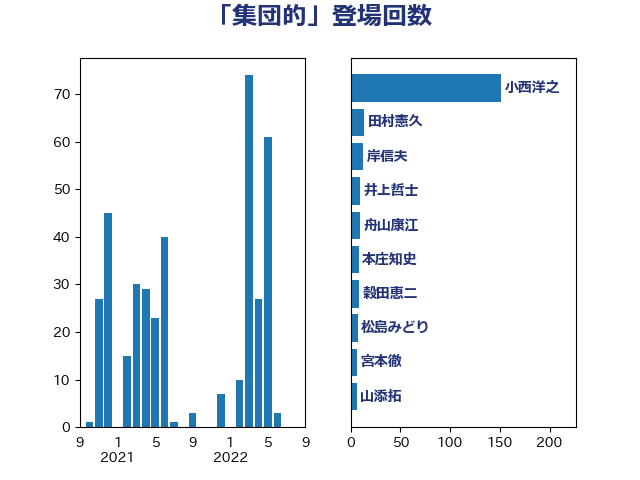

単語「集団的」

| 小西洋之 | 立憲民主党 | 151 回 |
| 田村憲久 | 自由民主党 | 14 回 |
| 岸信夫 | 自由民主党 | 13 回 |
| 井上哲士 | 日本共産党 | 9 回 |
| 舟山康江 | 国民民主党 | 9 回 |
| 本庄知史 | 立憲民主党 | 8 回 |
| 穀田恵二 | 日本共産党 | 8 回 |
| 松島みどり | 自由民主党 | 7 回 |
| 宮本徹 | 日本共産党 | 6 回 |
| 山添拓 | 日本共産党 | 6 回 |
| 川田龍平 | 立憲民主党 | 6 回 |
| 若宮健嗣 | 自由民主党 | 6 回 |
| 大河原まさこ | 立憲民主党 | 5 回 |
| 石破茂 | 自由民主党 | 5 回 |
| 細田博之 | 自由民主党 | 5 回 |
| 井上信治 | 自由民主党 | 4 回 |
| 奥野総一郎 | 立憲民主党 | 4 回 |
| 林芳正 | 自由民主党 | 4 回 |
| 浅田均 | 日本維新の会 | 4 回 |
| 玉木雄一郎 | 国民民主党 | 4 回 |
| 緒方林太郎 | 無所属 | 4 回 |
| 西村智奈美 | 立憲民主党 | 4 回 |
| 赤嶺政賢 | 日本共産党 | 4 回 |
| 北神圭朗 | 無所属 | 3 回 |
| 小池晃 | 日本共産党 | 3 回 |
| 打越さく良 | 立憲民主党 | 3 回 |
| 櫻井周 | 立憲民主党 | 3 回 |
| 福重隆浩 | 公明党 | 3 回 |
| 野田佳彦 | 立憲民主党 | 3 回 |
| 中川正春 | 立憲民主党 | 2 回 |
| 伊波洋一 | 無所属 | 2 回 |
| 山口俊一 | 自由民主党 | 2 回 |
| 新藤義孝 | 自由民主党 | 2 回 |
| 熊谷裕人 | 立憲民主党 | 2 回 |
| 田村智子 | 日本共産党 | 2 回 |
| 矢倉克夫 | 公明党 | 2 回 |
| 礒崎哲史 | 国民民主党 | 2 回 |
| 福島みずほ | 社会民主党 | 2 回 |
| 稲田朋美 | 自由民主党 | 2 回 |
| 篠原豪 | 立憲民主党 | 2 回 |
| 足立康史 | 日本維新の会 | 2 回 |
| 長妻昭 | 立憲民主党 | 2 回 |
| 中曽根康隆 | 自由民主党 | 1 回 |
| 中谷元 | 自由民主党 | 1 回 |
| 井上英孝 | 日本維新の会 | 1 回 |
| 井原巧 | 自由民主党 | 1 回 |
| 吉田久美子 | 公明党 | 1 回 |
| 吉田統彦 | 立憲民主党 | 1 回 |
| 塩田博昭 | 公明党 | 1 回 |
| 山下貴司 | 自由民主党 | 1 回 |
| 岸田文雄 | 自由民主党 | 1 回 |
| 掘井健智 | 日本維新の会 | 1 回 |
| 新垣邦男 | 立憲民主党 | 1 回 |
| 柚木道義 | 立憲民主党 | 1 回 |
| 柳ヶ瀬裕文 | 日本維新の会 | 1 回 |
| 柴山昌彦 | 自由民主党 | 1 回 |
| 柴田巧 | 日本維新の会 | 1 回 |
| 森山浩行 | 立憲民主党 | 1 回 |
| 水岡俊一 | 立憲民主党 | 1 回 |
| 田島麻衣子 | 立憲民主党 | 1 回 |
| 空本誠喜 | 日本維新の会 | 1 回 |
| 茂木敏充 | 自由民主党 | 1 回 |
| 重徳和彦 | 立憲民主党 | 1 回 |
| 阿部弘樹 | 日本維新の会 | 1 回 |